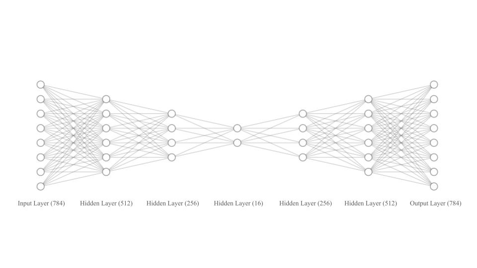
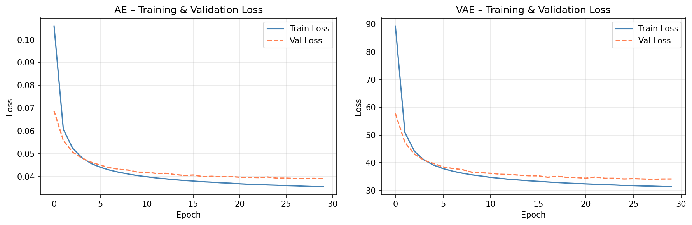
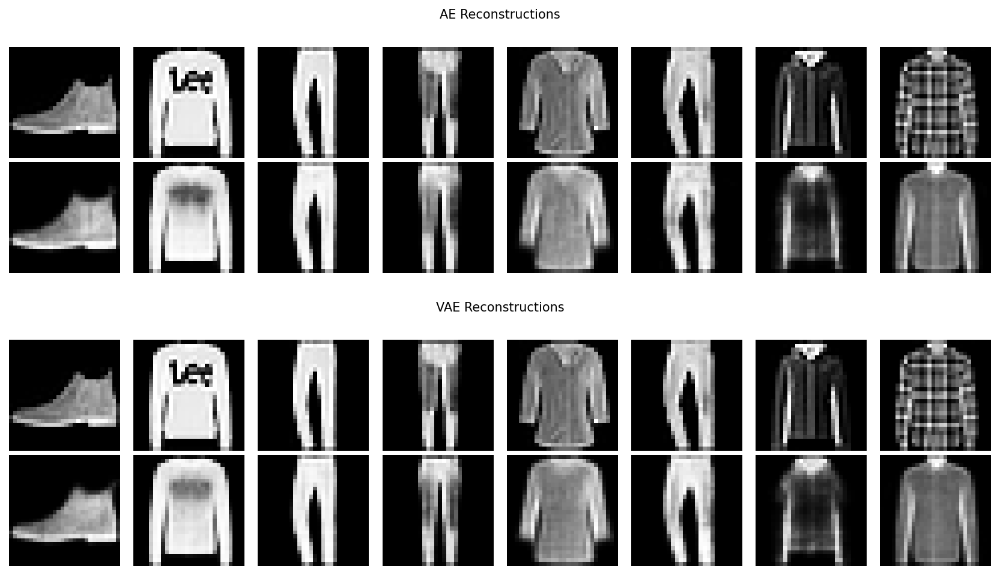
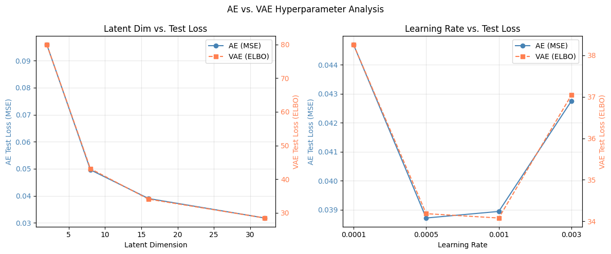
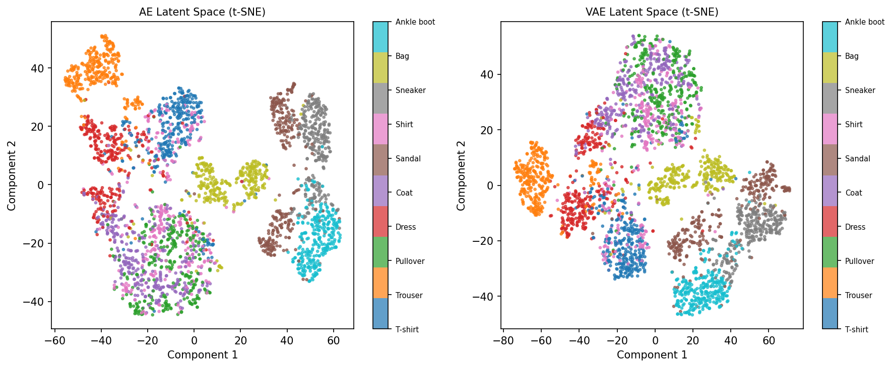
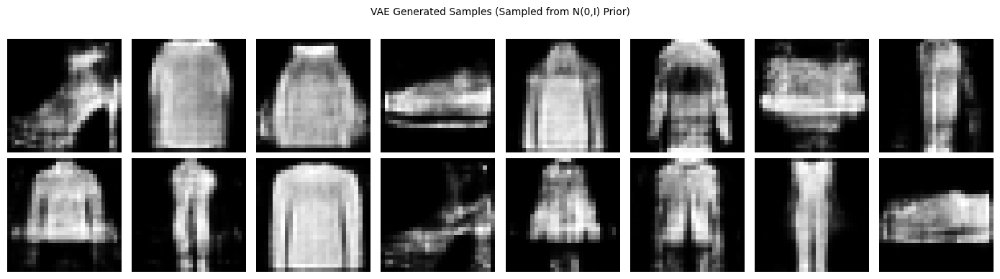

Hojung Lim · MASC 520 – Project 4 · USC Spring 2026

Figure 1: Autoencoder (AE) and Variational Autoencoder (VAE) architecture diagram
Both models use Adam optimizer, mini-batch size 128, 30 epochs. Images normalized to [−1, 1] to match Tanh output. Training set (60,000) split 90/10 into train (54,000) and validation (6,000); test set (10,000) held out.

Figure 2: Training and Validation loss over 30 epochs — AE (left) and VAE (right) at baseline (dim=16, lr=1×10⁻³)
Both models converge smoothly with no overfitting. At baseline: AE test MSE = 0.039, VAE test ELBO = 34.23. These values are not directly comparable since the VAE's ELBO includes the KL term.

Figure 3: Original images (top) and reconstructions (bottom) — AE (left) and VAE (right)
Both models recover the overall shape and class of each garment. AE outputs are slightly sharper; VAE outputs are mildly smoother due to the KL penalty spreading the latent posterior.

Figure 4: Test Loss vs. Latent Dimension (left) and Test Loss vs. Learning Rate (right)
| Latent Dim | AE Test MSE | VAE ELBO |
|---|---|---|
| 2 | 0.097 | 79.9 |
| 8 | 0.050 | 43.0 |
| 16 | 0.039 | 34.6 |
| 32 | 0.032 | 28.4 |
The largest gain occurs between dim 2 and 8; gains diminish beyond 16. Optimal learning rate: 5×10⁻⁴–1×10⁻³ (under-converged at 1×10⁻⁴, overshoots at 3×10⁻³).

Figure 5: t-SNE of 3,000 test encodings — AE latent space (left) and VAE latent space (right)
The AE latent space is fragmented — class clusters overlap with empty voids between them. The VAE latent space is denser and more organized, with cleaner class separation due to KL regularization.

Figure 6: 16 samples generated by the VAE from N(0,I) prior — visually coherent clothing silhouettes
The VAE's structured prior supports reliable generation. Sampling z~N(0,I) produces plausible clothing images, confirming the continuous, well-organized latent space. The AE cannot do this — its unstructured latent space does not guarantee valid decodings between training points.